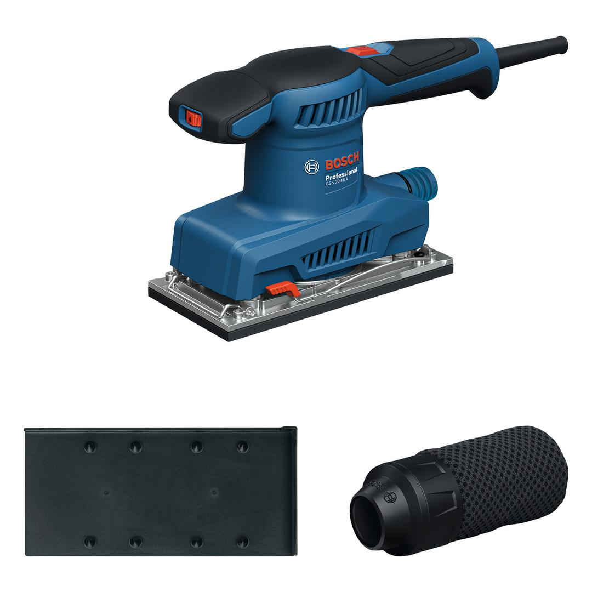
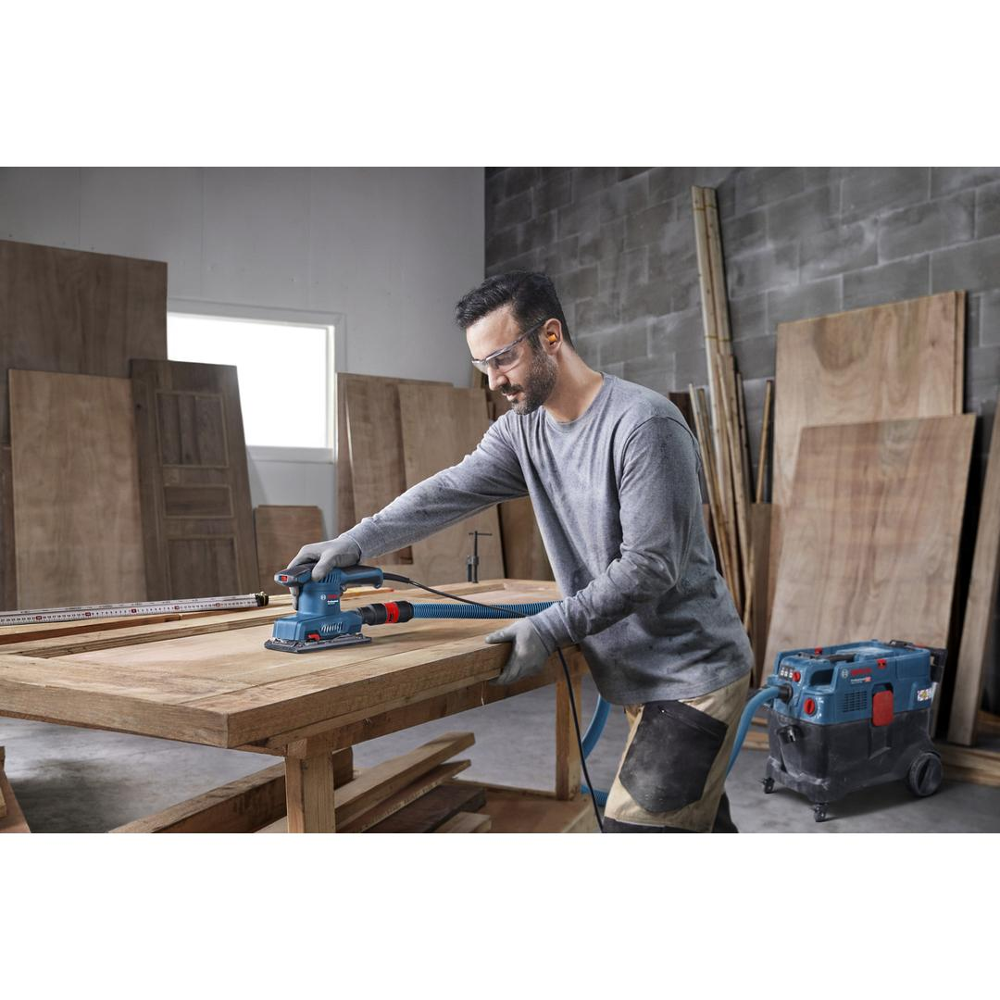
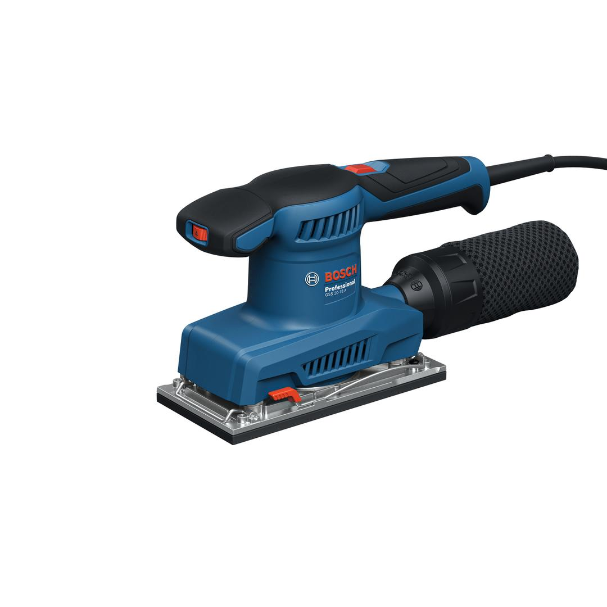
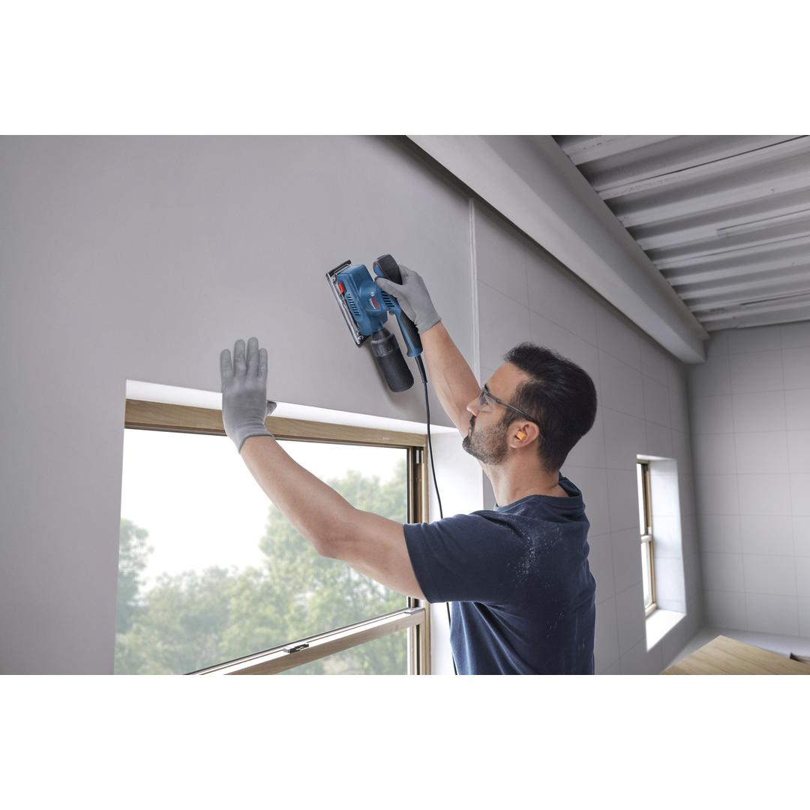
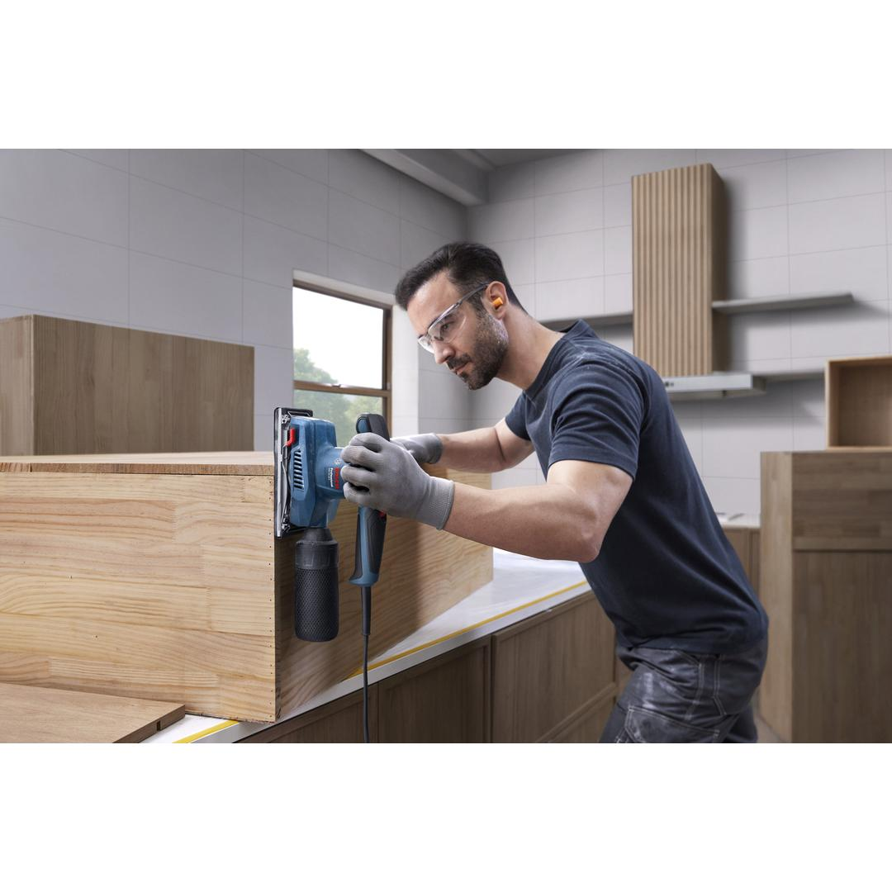
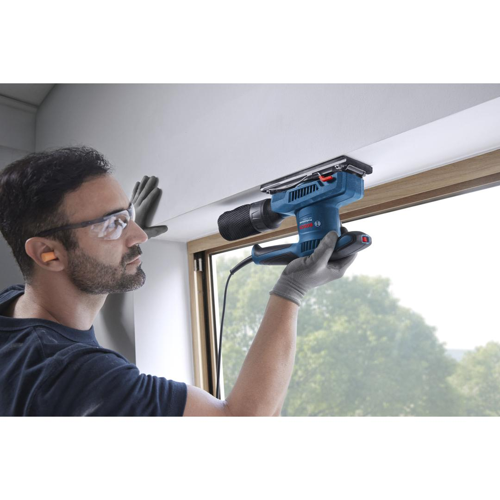
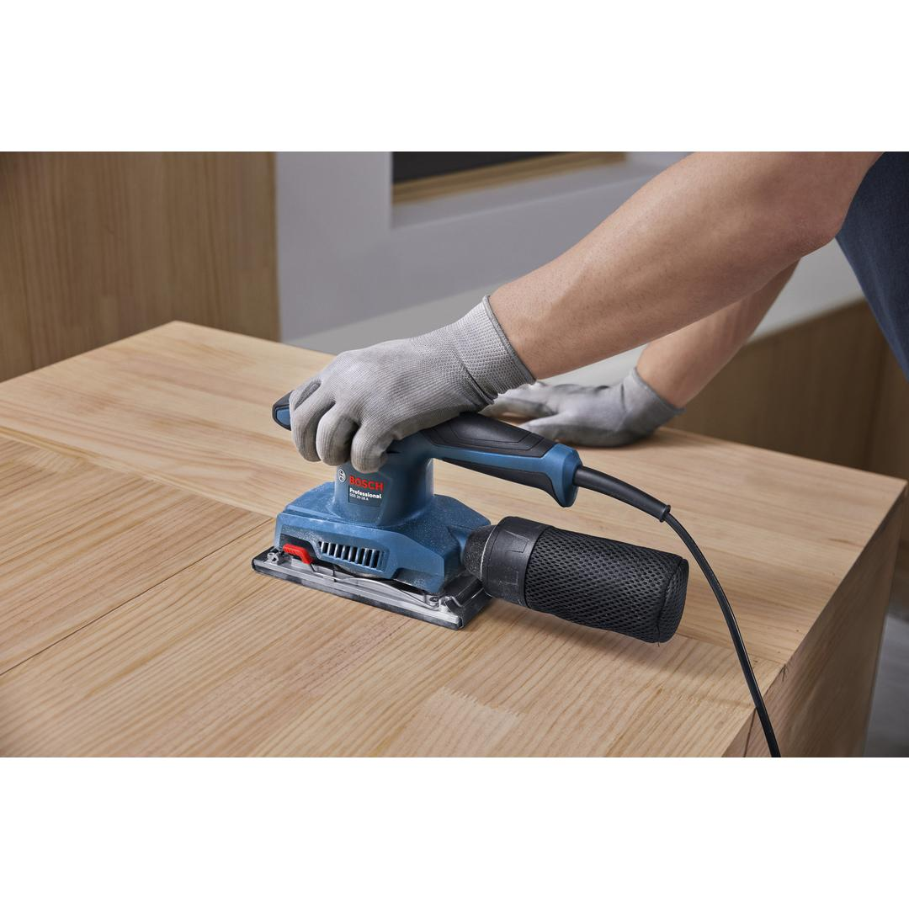
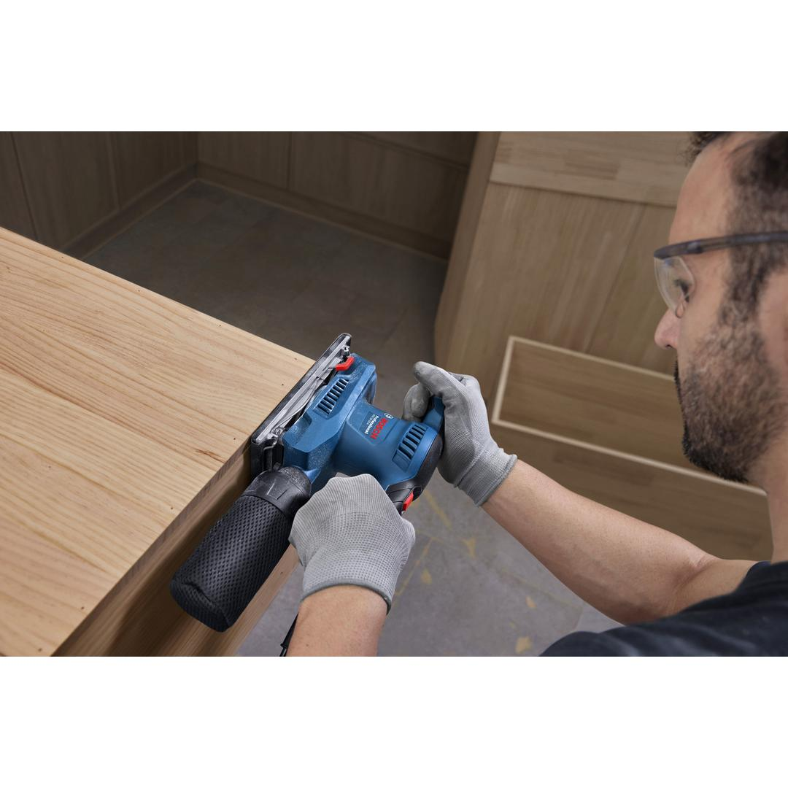
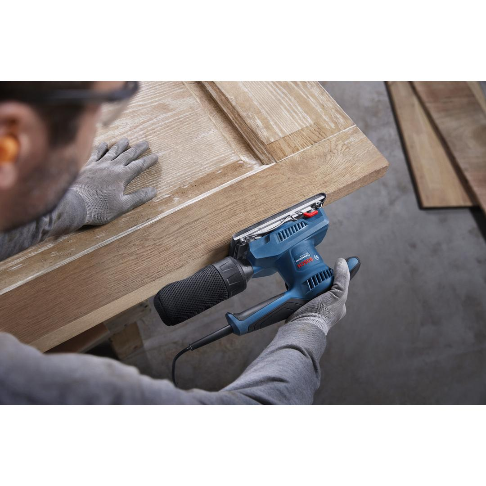
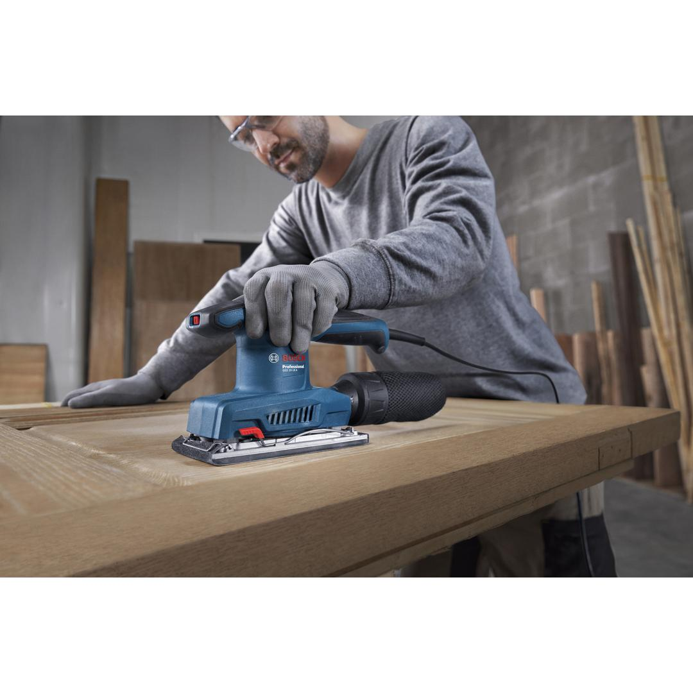

06010701K1










If you’re looking for an efficient sander that’s designed for comfort, the Bosch GSS 20-18 Professional orbital sander is the tool for you. Thanks to its low vibration value limiting to 3.0 m/s2, you can work for longer periods without getting tired or your hand feeling numb. What’s more, the tool’s optimal balance makes sanding in all directions effortless, with one or both hands. Plus, this high-comfort sander features an ergonomic, anti-skid grip for effortless work.
| Weight |
1.600 kg |
| Tool dimensions (width) |
90 mm |
| Tool dimensions (length) |
251 mm |
| Tool dimensions (height) |
155 mm |
| Sanding plate, width |
90 mm |
| Sanding plate, length |
183 mm |
| Rated input power |
220 W |
| No-load speed |
12,000 – 12,000 rpm |
| No-load orbital stroke rate |
24,000 – 24,000 opm |
| Orbit diameter |
2.0 mm |
The efficient sander designed for comfort
The Bosch GSS 20-18 Professional orbital sander is ideal for cabinet installers and carpenters. You can use it for sanding large surfaces before painting, joint smoothing, and edge sanding.
The Bosch GSS 20-18 Professional orbital sander is a low-vibration tool designed with optimal balance for use with one or both hands, and an ergonomic anti-skid grip. It also comes with a dust-resistant mechanical system and switch protection.